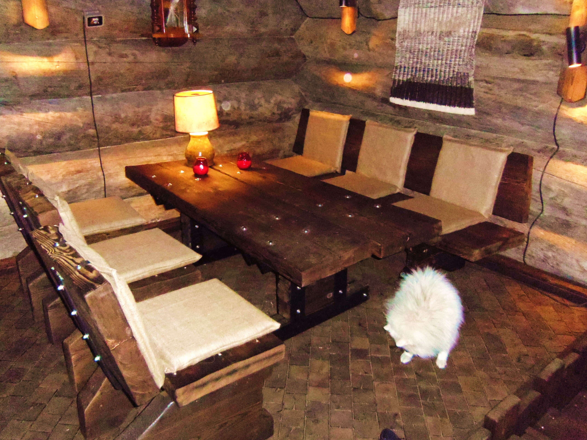
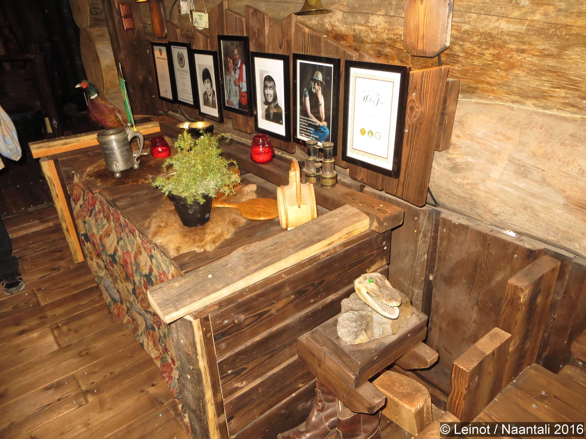
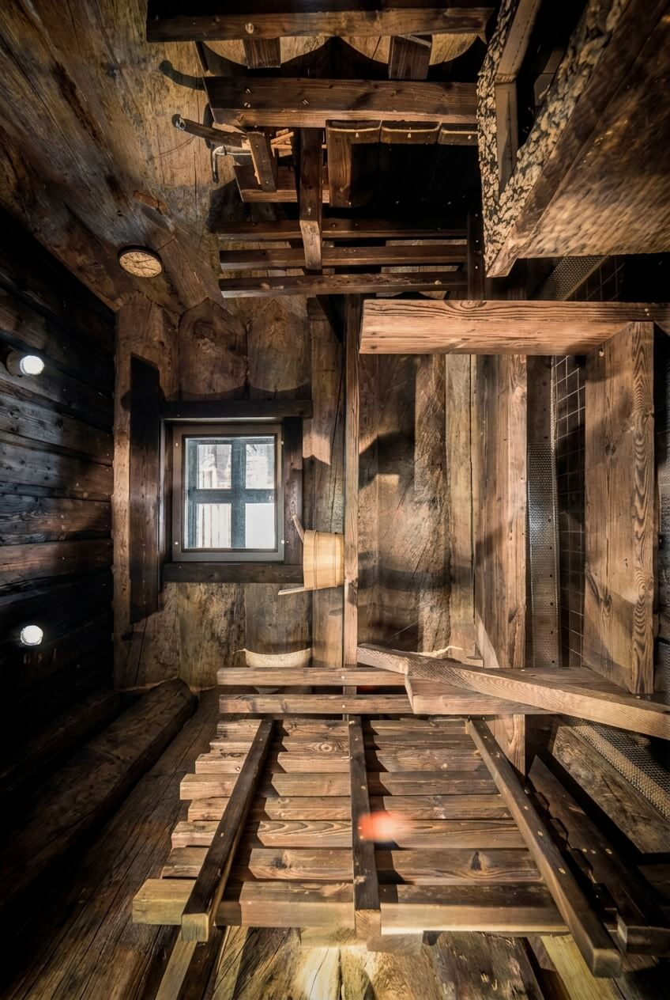
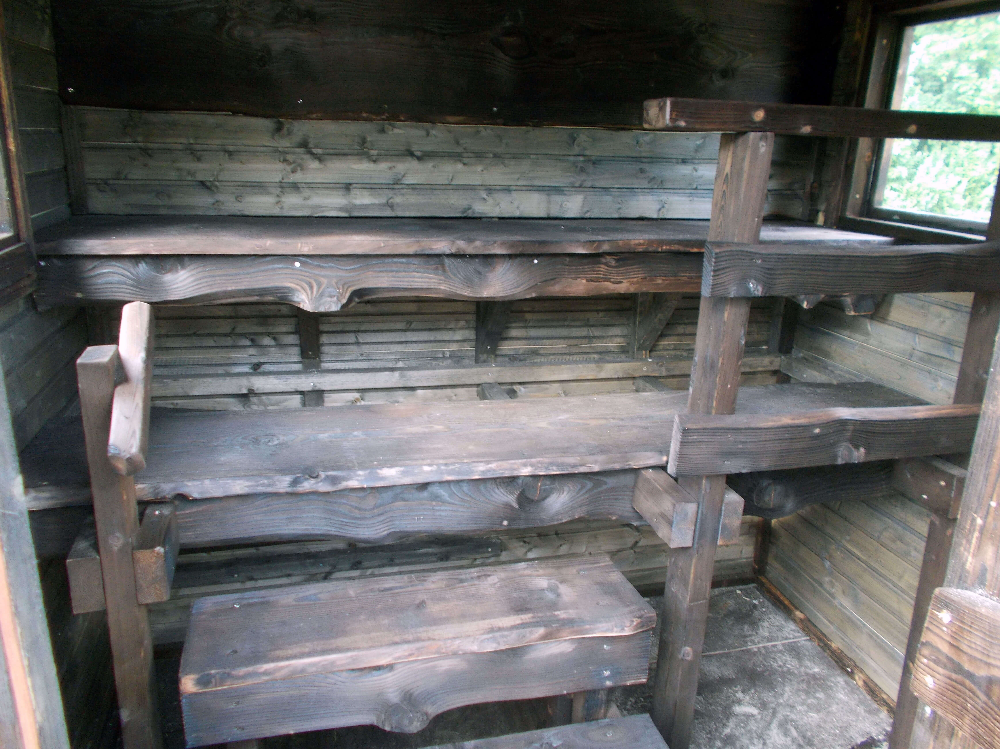
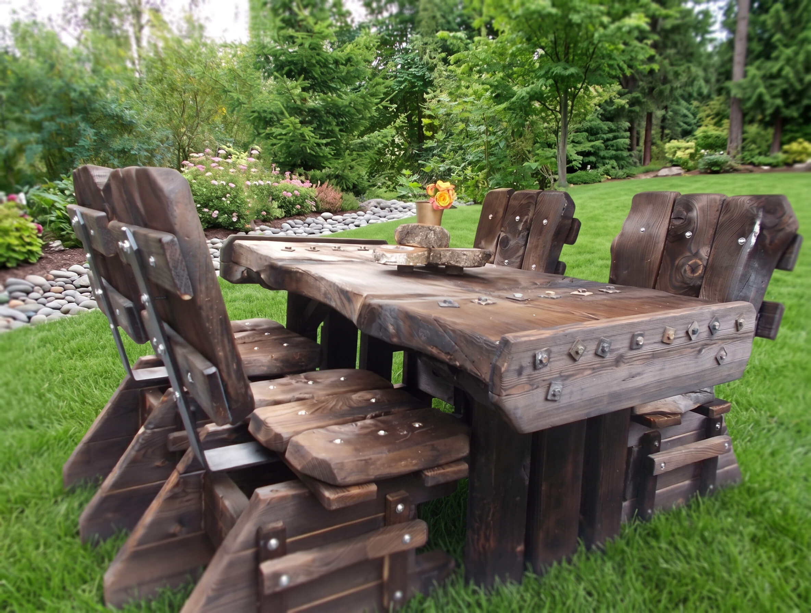
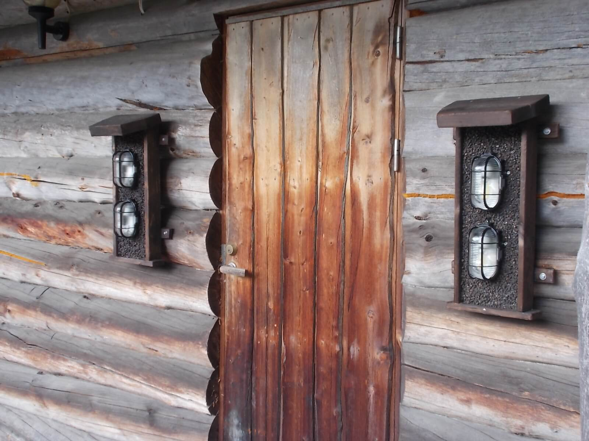

Ruokailukalusto
8 hengen massiivinen kelopöytäryhmä.
Olen 79-vuotias äijä. Koulutukseltani ammattisotilas. Sekoitin käsitteet oma-aloitteellisuus ja omavaltaisuus, jonka takia siirryin siviiliin... sitten seurasi sitä ja tätä... enimmäkseen sitä.
Vuonna 2023 jäin eläkkeelle konesuunnittelijana. Nyt valmistan kaikkea mahdollista... mahdottomatkin mahdollisia, mutta vähän kalliimpia.
Kouluaikana radikalismi aiheutti allergian opiskelua kohtaan, jonka oireina oli mm. koulussakäynnin ja varsinkin läksyjen lukujen laiminlyönti. Tämä johti lopulta katastrofiin. En omaa kouluajaltani minkäänlaista todistusta.

Nuorena harrastin menestyksellisesti kilpauintia. Vuonna 1966 olin Hesan Messuhallissa voittamassa Rock-yhtyeitten SM:n. Haulikkoammunnassa olen kilpaillut koko ikäni, jossa lajissa yksi Suomen mestaruus ja pari Suomen ennätystä.
Enemmittä puheitta itse asiaan. Eniten arvostan suunnittelemaani ja toteuttamaani hirsilinnaa Villa-Marmaa. Lattia-ala 350 m², lisäksi terassi 140 m², harjakorkeus 11,5 m, 650 m³ ylisuurta keloa. Valmistin itse kaikki huonekalut, valaisimet, ikkunat, ovet ja tein puuhan eteen luokkaa 7 000 työtuntia. Melkoinen pirtti.
En ole kauppaamassa tällaista pirttiä... jos joku on kiinnostunut, voin konsultoida projektia tiedoillani.


Käsinveistettyä keloa, mittatilauskalusteita ja uniikkeja tilaratkaisuja.
8 hengen massiivinen kelopöytäryhmä.

Massiivipuinen oleskeluryhmä.

Porontaljaverhoillut ulkokalusteet.

Kelopuiset toimistoratkaisut.

Perinteinen savusaunatunnelma.

Järeät lankkulauteet.
Pöydän koko 80 × 140 cm. Järeät ja rustiikkiset äijäluolakalusteet sisä- ja terassikäyttöön. Tilauksesta saatavilla myös 6 hengelle mitoitettuna.

Rustiikkiset hirsivalaisimet 230V sähköistyksellä, myrskylyhdyt, järeät naulakot hevoskengillä ja keittiövälinetelineet suoraan Eurajoen verstaalta.

Uniikit puukellot joko perinteisellä koneistolla tai päinvastaisella numeroinnilla, joka "vähentää aikaa ja saa katsojan nuortumaan". Saatavilla toiveiden mukaisilla symboleilla ja messinkikilvellä.
Puutöiden ohella suunnittelen ja valmistutan erikoiskoneita teollisuuteen ja vapaa-aikaan hyödyntäen hydrauliikkaa, pneumatiikkaa ja sähköä.
Jopa 1 000 tonnin vetolaitteet ja teollisuusmekaniikka.
Kestävät ja turvalliset ponttooniratkaisut vesille.
Mobiilisaunat ja paljut peräkärryalustalle toteutettuna.
Järeät ulkoruuanvalmistusyksiköt kovaan käyttöön.
Kestävät ja turvalliset ulkoilurakenteet koirille.
Soittajapatsaat, uniikit lahjaesineet ja metallirakenteet.


{kind=link}
{kind=link}
{kind=link}
{kind=link}
{kind=link}